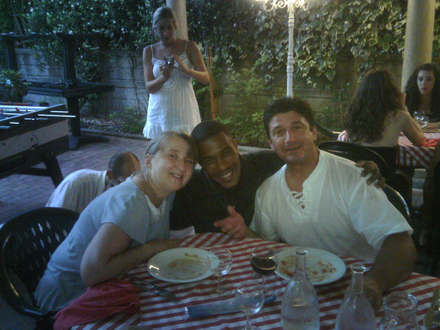

Worlds Apart, Ma Non Cosi Diversi
Worlds apart, but not that different, was the title of a theatrical project I worked on in college. It was a play written half in Italian and half in English. My school's theatre department collaborated with an Italian Ballerina Academy, Orizon Danza©, to create a play that utilized the school's dancing techniques. The project would also require music to dance too, so a few music students from my school were also included. I was the piano accompanist, and since one of the main characters played piano and was African-American, I also got to do a little acting.
After almost a year of collaboration and script writing over skype, 6 performances were scheduled: 3 in Italy and 3 in the US. The American cast and staff spent a month with host families while we finished the project and our 3 performances, and the Italian dancers and staff spent a month with us as host families in the US. I spent a month living with a wonderful Italian family that spoke very little English and it was a remarkable and enriching experience.

The majority of the experience was 10 hour rehearsal days that were full of fun and frustration. Most of the time when people speak of their time abroad they speak of all the sights they saw and things they experienced, but this experience was not so vacation like. In a way that is what made it special. I did get to do a little sight-seeing at Cuomo Beach and in the beautiful city of Milan.